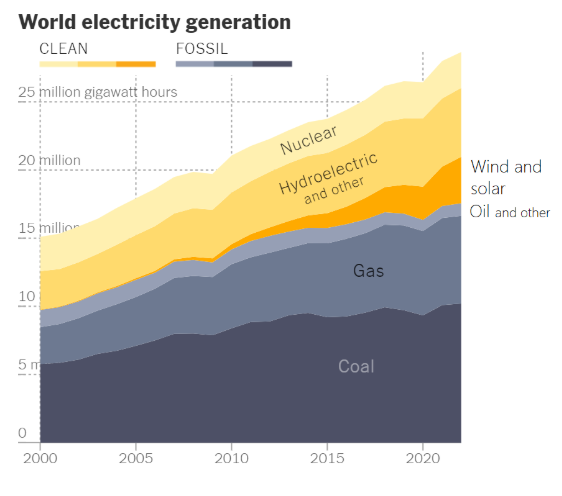

Beyond the Panels: The Hidden Negative Environmental Impacts of Solar Energy
Table of contents |
|---|
| Abstract |
| Introduction |
| Mining Materials |
| Toxic Manufacturing Process |
| Taking Up Land |
| End-Of-Life Challenges |
| Finding Solutions |
| Conclusion |
| References |
Abstract
The effect of global warming is mostly from the overuse of burning fossil fuels to provide the world’s energy needs. To lessen the effects of climate change, renewable energy sources such as solar power need to be built. While solar panels do generally seem environmentally friendly at first glance during their operation, this is not always the case when we look at the full cycle of its production. Mining the raw materials needed can induce some problems. The manufacturing process is energy intensive and toxic. A large amount of land is needed, which may impact wildlife and there are issues with the disposal and recycling of solar panels. However, many of these issues can be reduced through careful thinking and proper preparations.
Introduction
Between 2030 and 2050, climate change is expected to cause approximately 250 000 additional deaths per year, from undernutrition, malaria, diarrhoea and heat stress alone (World Health Organisation, 2023). To combat the effects of global warming, the world must use more cleaner power. The sun can provide clean, non-polluting and sustainable electricity using solar panels. The use of solar power has increased in recent years, see figure 1 (New York Times, 2024). However, the wide scale use of solar energy does have some environmental problems too.
Figure 1 (New York Times, 2024)
Mining materials
Some of the raw materials needed to make solar panels include silicon, silver, and aluminium. Getting large quantities of silicon dioxide is difficult as the mineral is found mostly in mines and the miners have a high chance of getting silicosis (Rahman et al., 2022). Mining involves destroying large areas, which destroy natural habitats for both plants and animals. Removing plant life can result in soil erosion, which decreases soil fertility and makes land worst for agriculture. It can also create soil-heavy water that can flow downstream and lead to the buildup of heavy layers of sediment that may block streams or rivers which can lead to flooding (Sulaeman, 2020). During heavy rain, the loose soil from mining sites gets washed away, which will carry sediments into nearby streams, lakes, and rivers, this harms aquatic life and makes water unsafe for people to drink (Anderson engineering company inc.).
Toxic Manufacturing Process
After the raw materials are mined, they need to be manufactured into solar panels. This process requires large furnaces which need a massive amount of energy to keep them hot and most of the energy needed to prepare pure silicon comes from power stations burning fossil fuels (Breeze, 2016). Toxic materials are made as a byproduct such as silicon tetrachloride, which can be recycled to create more polysilicon, however this is costly, so it is frequently left in water or soil which results in contamination (Rahman et al., 2022). Hydrofluoric acid which is a toxic chemical is also used (Saltworks, 2024). It needs to be handled with great care otherwise it can leak into the environment, harming wildlife. With all the possible toxic chemicals that can be made during the manufacturing process, factories must have systems in place to prevent accidents, however in many cases these safeguards are not followed, leading to environmental damage.
Taking Up Land
Solar farms, which are a large collection of photovoltaic (PV) solar panels used to produce electricity on a large scale, require a lot of land. Estimates for utility-scale PV system range from 3.5 to 10 acres per megawatt (UCSUSA, 2013). This can destroy the natural habitats of species, for example in the Mojave Desert of California, tutorises have to dig burrows for their shelter which other species also use (Rahman et al., 2022). Solar farms can also cause a phenomenon known as the photovoltaic heat island effect, which occurs when solar panels reflect heat. Findings demonstrated that temperatures around a solar power plant were 3-4°C warmer than nearby wildlands (Binder, 2016). This alters the natural habitat and when animals are displaced from their natural homes, they are often unable to adapt to the surrounding ecosystem, decreasing biodiversity.
End-of-Life Challenges
Solar panels generally last for 25 to 30 years (Walker et al., 2024). So, as solar panels increase in popularity, there is also an increase in the problem with the disposal of panels that are past their lifetime. The International Renewable Energy Agency (IRENA) estimates that 8 million tons of PV panels will reach their end of life and be decommissioned by 2030, growing to 50 million tonnes by 2050 (Briggs, 2024). All these unused solar panels will most likely end up in landfills, where they will take up most of the space and release toxic substances, like lead and cadmium, which can leak into the soil and water harming the environment and human health (Nussey, 2021). There is clearly a lack of appropriate recycling systems for solar panels, mainly because of the reason that recycling is expensive because advanced equipment and technology are needed.
Finding Solutions
The effects of many of these issues can be reduced through better practices. For example, in the manufacturing process it is possible to use renewable energy for the furnaces. Instead of building solar farms in natural habitats, it is possible to prioritize building them in former industrial sites, degraded areas, abandoned agricultural lands or even in the roofs of houses, this can preserve wildlife and keep biodiversity. It is possible to implement creative plans such as agrivoltaics, which is agricultural production underneath solar panels (Widmer et al., 2024), this can fix the problems of solar panels taking up land and impacting wildlife.
Conclusion
As the world is increasingly getting warmer as the years go by, it is vital that we reduce the need to burn fossils and rely only on renewable sources such as solar power to power our world. However, the world cannot simply just build more solar panels without looking at the potential problems that may occur, but by carrying out stricter environmental rules and regulations for mining, manufacturing, recycling and by investing more into sustainable designs and materials for solar panels, the world can maximize the full potential of solar power whilst also protecting the planet.
References
Anderson Engineering Company Inc. (no date) Water pollution effects from mining require environmental characterization. Available at https://www.andersoneng.com/water-pollution-effects-from-mining-require-environmental characterization/#:~:text=Sedimentation%20and%20Erosion&text=When%20these%20mining%20sites%20experience. (Accessed: 04/12/24)
Binder, G. (2016) Researcher discover solar heat island effect caused by large-scale solar power plants. Available at: https://phys.org/news/2016-11-solar-island-effect-large-scale-power.html#:~:text=For%20this%20study%2C%20the%20team,C)%20warmer%20than%20nearby%20wildlands. (Accessed: 04/12/24)
Breeze, P. (2016) 'Chapter 11 – Solar Integration and the Environmental Impact of Solar Power', Solar power Generation, 81-87. Available at: https://doi.org/10.1016/B978-0-12-804004-1.00011-7 (Accessed: 04/12/24)
Briggs, J. (2024) The Environmental Impact of Photovoltaics. Available at: https://www.minviro.com/resources/blogs/the-environmental-impact-of-photovoltaics (Accessed: 04/12/24)
End-of-Life Solar Panels: Regulations and Management (2024) Available at: https://www.epa.gov/hw/end-life-solar-panels-regulations-and-management#:~:text=Hazardous%20waste% (Accessed: 04/12/24)
Environmental Impacts of solar Power (2013) Available at: https://www.ucsusa.org/resources/environmental-impacts-solar-power (Accessed: 04/12/24)
Gunderson, I. (2015) 'Climate and land-use change impacts on potential solar photovoltaic power generation in the Black Sea region', Environmental Science & Policy, Volume 46, 70-81. Available at: https://doi.org/10.1016/j.envsci.2014.04.013 (Accessed: 04/12/24)
Hernandez, R.R et al. (2014) 'Environmental impacts of utility-scale solar energy', Renewable and Sustainable Energy Reviews, Volume 29, 766-779. Available at: https://doi.org/10.1016/j.rser.2013.08.041 (Accessed: 04/12/24)
Hosenuzzaman, M, et al. (2015) 'Global prospects, progress, policies, and environmental impact of solar photovoltaic power generation', Renewable and Sustainable Energy Reviews, 284-297. Available at: https://doi.org/10.1016/j.rser.2014.08.046 (Accessed: 04/12/24)
Lakshman, S. (2024) More Critical Minerals Mining Could Strain Water Supplies in Stressed Regions. Available at: https://www.wri.org/insights/critical-minerals-mining-water-impacts#:~:text=Waste%20from%20mining%20and%20processing (Accessed: 04/12/24)
Lindsey, R et al. (2024) Climate Change: Global Temperature. Available at: https://www.climate.gov/news-features/understanding-climate/climate-change-global-temperature (Accessed: 04/12/24)
Nussey, B. (2021) Are solar panels really full of toxic materials like cadmium and lead?. Available at: https://www.freeingenergy.com/are-solar-panels-really-full-of-toxic-materials-like-cadmium-and-lead/ (Accessed: 04/12/24)
Rahman, A et al. (2022) 'Environmental impact of renewable energy source based on electrical power plants: Solar, wind, hydroelectric, biomass, geothermal, tidal, ocean, and osmotic', Renewable and Sustainable Energy Reviews, Volume 161. Available at: https://doi.org/10.1016/j.rser.2022.112279 (Accessed: 04/12/24)
Rizzo, C et al. (no date) Agrivoltaics: Combing solar panels and agriculture into a win-win result. Available at: https://www.statkraft.com/newsroom/explained/agrivoltaics-combining-solar-panels-and-agriculture/ (Accessed: 04/12/24)
Solar Cell Manufacturing – Industrial Wastewater Treatment Challenges and Solutions (2024) Available at: https://www.saltworkstech.com/articles/solar-manufacturing-industrial-water/#:~:text=Phosphorous%20is%20the%20most%20common,leaving%20a%20clean%20silicon%20surface
Sulaeman, D et al. (2020) The Causes and Effects of Soil Erosion, and How to Prevent it. Available at: https://www.wri.org/insights/causes-and-effects-soil-erosion-and-how-prevent-it (Accessed: 04/12/24)
The New York Times (no date) What Going on in This Graph? Global Electricity Sources. Available at: https://www.nytimes.com/2024/03/28/learning/whats-going-on-in-this-graph-april-10-2024.html (Accessed: 04/12/24)
Walker, E et al. (2024) How long Do Solar Panels Last? Available at: https://www.energysage.com/solar/how-long-do-solar-panels-last/ (Accessed: 04/12/24)